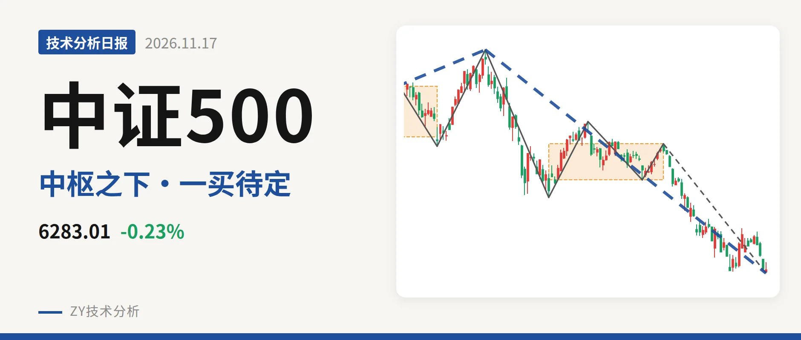
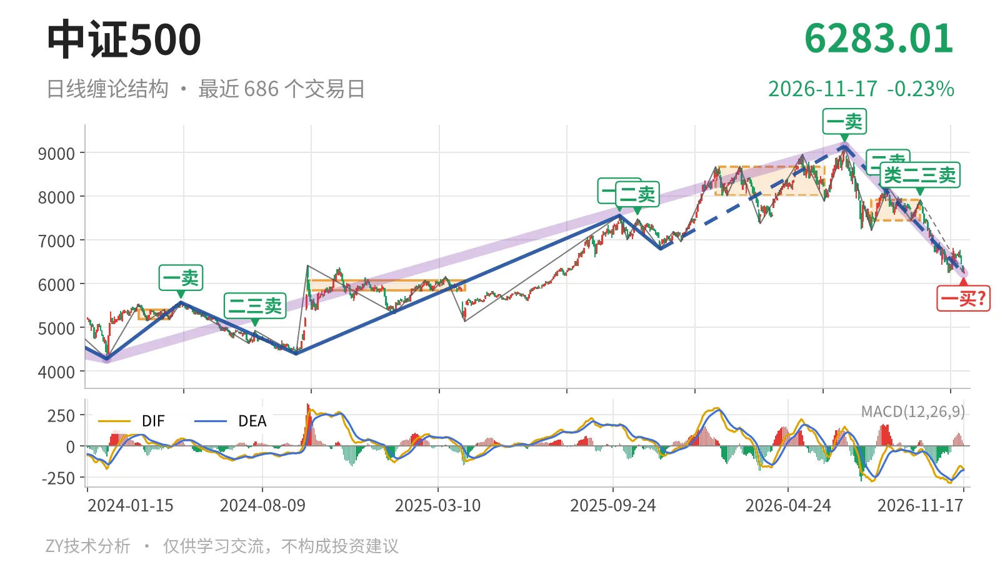
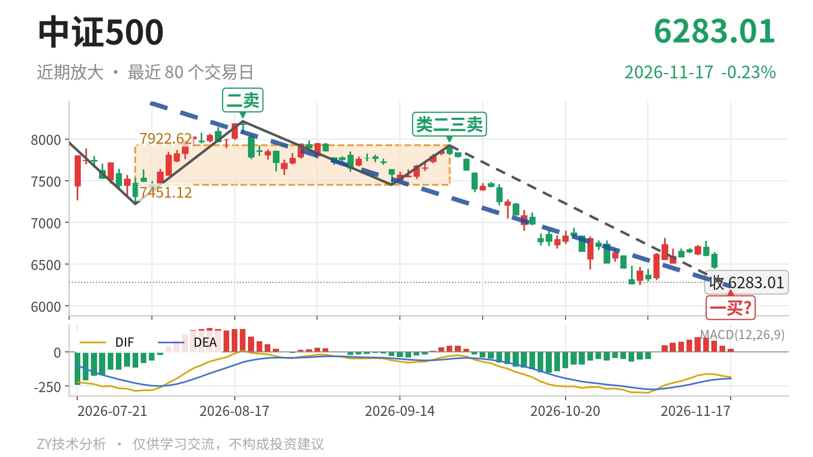

中证500｜跌破中枢，6234.40点暂定一买

最近日线中枢 7451.12—7922.62点，收盘位于中枢之下
一句话：下跌段未改，6234.40点暂定一买，反抽看7451点附近
📉 走势结构：日线下跌段延续，反弹未成
7月1日以来的日线下跌段还在延续，当前没有出现可以改变结构的反弹。更大级别上，7月1日以来的下跌段已经把价格从9147.56点压回6283点一线，回落仍在延续。日线线段方面，2025年11月24日至2026年7月1日的上涨线段已经结束；7月1日以来进入下跌线段，内含5笔，最新一笔没有结束。结构上仍是下跌线段主导，尚未回到最近日线笔中枢内部。

📐 中枢与位置：跌破最近中枢，中枢下移
最新收盘6283.01点已跌破7月30日至9月22日的日线笔中枢（7451.12—7922.62点），低于下沿约15.7%。这个中枢明显低于1月26日至6月8日的日线笔中枢（8014.66—8671.35点），其中轴也从8343.00点降至7686.87点，日线中枢下移。更大级别线段中枢方面，价格回到2016年1月27日至2017年9月12日中枢（5655.76—6692.14点）内部，并略高于2022年4月27日至2023年8月4日中枢上沿6263.16点。短线盘整区已经下台阶，原中枢成为反抽压力。
🔻 买卖点：卖点一个比一个低，暂定一买待定
7月1日一卖9147.56点、8月18日二卖8211.31点、9月22日类二三卖7922.62点，一个比一个低。11月17日出现暂定的一买6234.40点，但它所在的9月22日以来下跌笔还在延续，会随这一笔的变化而修正。线段级别买卖点里，最近一个是2025年11月24日三买6797.50点，之后没有新的线段级卖点，说明当前回落的高点层级仍不够高。

📊 背驰：绿柱收缩但DIF新低，底背驰未成
背驰比较只看最关键的9月22日以来下跌笔与7月1日至7月30日下跌笔。9月22日以来绿柱面积1835，小于前者的2687；但DIF低点由-285.2继续下探至-298.6，价格新低的同时DIF也新低。这不是标准的“新低不新弱”，说明绿柱面积收缩但DIF未同步抬高。最新DIF-184.2、DEA-194.8，柱体21.1，仍在零轴下方。因此暂定一买还缺日线底背驰配合。
🎯 关键位置观察：反抽不过7451点则三卖
后续反抽的第一观察位在7451点附近。若反抽回不到7451点上方，结构上构成日线三卖，下跌段仍将延续。若重新站上7923点，则这次下跌更可能只是中枢扩展。下方跌破6263点后，下一结构支撑看5594点附近。当前价格在最近中枢下方、卖点一个比一个低，且暂定一买没有标准背驰，整体结构偏弱，弱在反抽结构尚未形成。
⚠️ 本文为基于公开行情数据的缠论技术结构记录，由程序自动计算并生成，仅供学习交流，不构成任何投资建议。市场有风险，投资需谨慎。